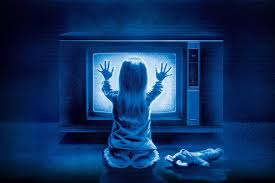

Al igual que existen estos géneros en libros, películas, etc. No quita el hecho que en la vida real suceda, a muchas personas les a pasado por una vez en su vida alguna situación de este tipo, causando un gran miedo. A continuación, algunas historias de personas:
Lucero Álvarez
Tengo dos hijos una niña y un niño los cuales tienen una diferencia de edad de tres años esto me ocurrió cuando estaba embarazada del segundo durante todo el proceso de gestación mi esposo por el trabajo viajaba constantemente por toda la República Mexicana por lo que mi hija y yo solemos quedarnos completamente solas hasta por un mes entero durante este tiempo mi hija pasaba gran parte del día jugando en el patio de la casa es que el espacio que había se prestaba para que tuviera muchísima libertad sin embargo un día la niña comenzó a decirme que tenía un amigo que iba a visitarla y jugaba con ella diariamente decía que él era bueno pero que a veces le daba miedo porque cuando quería sus juguetes y ella no se los prestaba se comenzaba a portar muy grosero al principio sí me provocó cierto temor pues era imposible que dentro de la casa estuviera un niño aparte de ella sin embargo quise creer que eran cosas de su imaginación.
Al poco tiempo lo empecé a ignorear tiempo después de esto comencé a notar algo que me pareció todavía más extraño en una zona del patio donde mi hija jugaba con frecuencia empezaron a aparecer diariamente una serie de monedas que estaban tiradas en el suelo algunas eran muy brillantes y otras estaban pegadas las cuales no había forma de que llegaran ahí pues como ya dije solamente en esa casa estábamos mi hija y yo todo esto siguió corriendo al grado de que me llegué a acostumbrar pero se volvió bastante perturbador unos días antes de que mi embarazo llegara a su fin recuerdo que mi hija y yo estábamos viendo las imágenes de la galería del teléfono y de pronto apareció esta una imagen donde estaba ella sola pero aparecía de fondo una silueta de un niño, en ese momento mi hija me sonrió y me dijo mamá él es mi amigo pero ya se va a ir, en ese momento sentí un gran escalofrío y si se fue justo después de que naciera mi hijo.
Vanessa Silvia
Esto me pasó a los 15 años en esa época yo regresaba a la escuela aproximadamente a las 4 de la tarde y como mi madre trabajaba no había nadie más que yo en la casa hasta las 8 de la noche.Un día cuando regrese de las clases comence a realizar mi rutina diaria: cambiarme la ropa, comer y hacer mis tareas mientras hacia esto último en mi habitación la cual está en el segundo piso de la casa observé a través de la rendija que se hace en la parte inferior de la puerta que la luz del cuarto al otro lado estaba encendida pensé que tal vez mi madre había olvidado a pagar la cuando se fua a trabajar así que me levante para apagarla; regrese a mi cuarto y continúe con mis tareas pero al terminarlas y al voltear de nuevo hacia la puerta me di cuenta de que la luz de a lado estaba encendida de nuevo eso me pareció extraño pero pensé que tal vez en mi distracción no la había apagado, realmente cuando creía hacerlo así que simplemente me levante y fui a oprimir el interruptor nuevamente: pero apenas regrese a mi habitación volví a ver por la rendija de la puerta que esa luz de nuevo estaba encendida pero esta vez no había dudado, yo la había apagado estaba de gira de eso en ese momento un miedo bastante extraño llegó hasta mi en forma del peor escalofrío que he sentido en mi vida ese mismo miedo me hizo comenzar a debatirme di debía o no ir a apagarla nuevamente pero antes de que pudiera hacer algo.
El ruido de una puerta corriendo se en la planta baja me provocó un sobresalto decidí bajar para ver su ya había llegado mi madre o algún otro de mis familiares pero al hacerlo no encontre absolutamente a nadie subí de nuevo pero una vez en el segundo pis ome di cuenta de que la luz del cuarto ahora estaba apagada, el miedo se apoderó nuevamente de mi pero pero esta vez con más fuerza y fui corriendo hasta mi dormitorio donde me enteré tratando de evitar lo que sea que estuviera pasando ahí afuera tras unos minutos creí que todo había acabado fue una grave equivocación pues comencé a escuchar el ruido de varias personas recorriendo toda la casa mientras azotaban las puertas del baño y de uno de los dormitorios de la planta baja además de que la luz de la habitación de al lado se apagaba y se encendia de manera frenética. El miedo que sentía iba en aumento cada vez más por lo que no supe que hacer y sólo me quedé ahí acostada y tapada hasta la cabeza con mi cobija, no supe cuanto tiempo paso pero me quedé dormida y desperté unas horas después con toda la casa oscura y una horrible sensación de estar siendo observada. A los pocos minutos llegó mi mamá acompañada de mi tío y les conte todo lo que había sucedido sin embargo no me creyeron, afortunadamente hasta el día de hoy no ha pasado otra vez lo mismo pero no puedo evitar la sensación de que alguien me observa cada vez que voy a la habitación de a lado o paso frente a ella.
